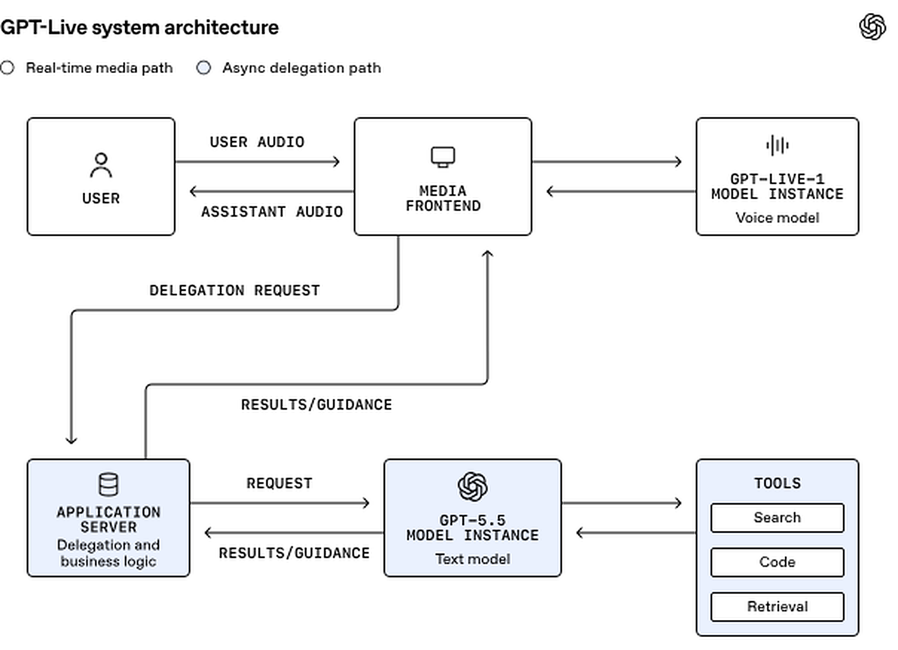
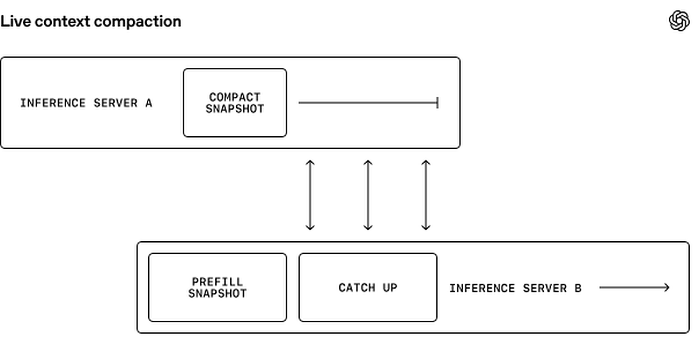
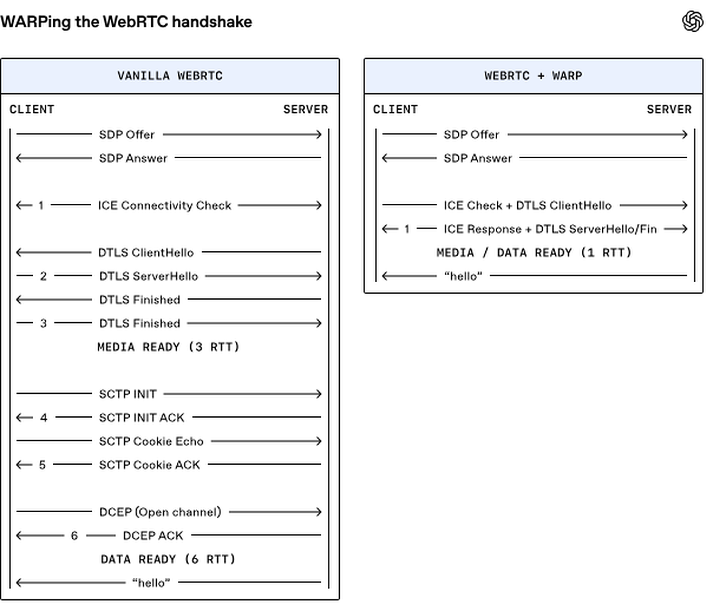

对于语音AI而言，知道何时开口比听起来更难。人类说话者能在几分之一秒内轻松完成话轮交接，但此前的语音AI系统跟不上这种节奏。它们的轮次式架构依赖被称为话轮检测器的小型模型，而这些模型面临着一项吃力不讨好的任务：猜测过早，用户会被打断；猜测过晚，响应又显得迟缓。只有在检测器做出决定之后，规模大得多的LLM（大语言模型）才能开始工作。
GPT-Live是我们的第三代语音系统，它将话轮检测器从音频路径中移除。其语音模型是全双工的，这意味着它可以同时听和说。这消除了对独立检测器的需求，使对话更加即时、自然。当需要更深入的推理或工具调用时，GPT-Live还可以调用我们的前沿模型（例如GPT-5.5），而不会打断对话的流畅进行。这些能力共同为GPT-Live带来了前所未有的对话响应性与智能的结合。
大规模提供这种体验需要一套针对低延迟优化的新系统架构。与典型的请求-响应式推理不同，我们的系统将传入的音频流式送入语音模型，并将输出的语音流式传回用户，同时在独立的异步路径上处理委托。在过去的六个月里，我们重构了模型推理、上下文管理和媒体传输，以确保语音端到端流畅流动。
该架构还在核心语音路径与应用逻辑之间建立了清晰的边界。这使得在不影响响应性的前提下可以轻松定制应用行为。这一基础支撑着ChatGPT Voice中不断扩展的一系列能力，包括新推出的在ChatGPT桌面应用中控制电脑和协调你的Agent（智能体）的能力。
我们将解释为什么早期的轮次式系统无法满足我们的需求，以及我们如何将新系统设计为在每一层都具备响应性。我们将介绍有状态推理、动态上下文管理、异步委托和协议级优化，它们协同工作，为GPT-Live带来真正 _live_ 的体验。
早期的语音架构继承了文本LLM（大语言模型）的轮次式特性，只是每个轮次以离散的音频块而非文本表示。在级联系统中，语音转文本、LLM（大语言模型）和文本转语音依次串行运行。这种串行化增加了延迟，并忽略了语调与节奏等线索。
语音转语音模型通过直接处理音频改进了这种方法。训练模型原生地理解和生成语音，使其能够保留转录中丢失的细节并更快地响应。但系统仍然依赖话轮检测器来决定何时开始推理。模型处理了更多的交互，但交互方式仍然是轮次式的。
GPT-Live让语音模型掌控对话：音频流入和流出模型，而更深入的推理和工具调用则异步进行。该系统的主要任务是维持不间断的媒体循环。其他工作，如调用前沿模型和持久化对话，则在实时路径之外进行。

保持这种媒体循环不中断并非总是轻而易举。传输、处理或推理中的任何延迟都可能成为可听到的停顿或伪影。之前的基于轮次的系统可以容忍音频数据块到达时间的一些变化。然而，实时媒体系统需要按计划交付每一音频帧。
早期在ChatGPT Voice和Realtime API上的工作为我们奠定了重要基础。我们已经重建了语音基础设施，以更低且更可预测的延迟将音频和视频直接流入和流出我们的系统。GPT-Live进一步推进了这一设计，通过一个新的专为连续对话构建的有状态推理系统，将媒体一路流式传输到模型。
不过，流式推理只是解决方案的一部分。为了使其在生产环境中良好运行，我们还必须确保从客户端到推理栈的可靠音频交付，并应对有状态性带来的挑战。
我们早期的一个决定是将媒体流与应用程序和业务逻辑明确分离。音频在专用快速路径上在客户端和语音模型之间移动。委派、工具调用和其他应用程序工作发生在异步RPC边界之后。缓慢的工具调用或后端服务可以延迟自身的结果，但无法阻塞媒体流。
这种分离还为系统提供了清晰的自定义边界。应用程序可以更改其工具、策略和后端行为，而不会影响负责保持音频流动的媒体前端。实时路径保持精简、可预测，并专注于必须实时完成的工作。
我们用Go编写了媒体前端和推理逻辑，替代了之前基于Python `asyncio` 的实现。这显著提升了帧交付的流畅度，新系统的p95与旧系统的p50相当。
WebRTC提供传输基础。它专为低延迟媒体设计，能够在丢包、时钟漂移和客户端连接变化的情况下持续运行。如果数据包延迟到达，WebRTC会轻微拉伸音频以避免间隙，然后短暂加速播放以追回实时进度。
通过在整个系统中尽量减少缓冲和阻塞，我们能够提供对话场景中人类期望的亚秒级响应。
有状态推理有其自身的运维权衡。语音会话可能长时间保持活跃，但其上下文会持续增长，并且模型实例会根据需求动态启停。
为了解决这些问题，我们构建了一套跨模型实例的无缝交接机制。当需要转换时，我们可以在现有实例旁边预热一个替代模型实例，用当前会话上下文对其进行预填充，并行地对两个实例运行推理，并在新实例完全就绪后进行切换。
同样的基本机制还支持动态上下文压缩。随着对话的进行，累积的上下文最终可能超过模型的上下文限制。压缩可以将上下文大小缩减到限制之内，但该操作需要时间。而且由于它改变了过去的上下文，它还会使模型的键值（KV）缓存失效，该缓存存储了之前处理的token的注意力键和值。重建该状态需要进行一次新的预填充，从而引入额外延迟。
相反，我们将压缩视为另一种受管理的转换。在原始模型实例继续对话的同时，系统压缩上下文并使用新上下文准备一个替换模型实例。一旦该实例就绪，我们便可以在不中断任何媒体流的情况下进行切换。这使得系统能够支持长时间通话，并在必要时进行压缩。
繁重的工作不占用实时路径，因此即使在交接过程中，对话也丝毫不受影响。

GPT-Live能够调用现有前沿模型，这赋予了它强大的能力，实际上将“说话”与更深层的“思考”解耦。但要让这种双模型架构感觉像同一个系统，需要解决两个相关的工程问题。
GPT-Live提供快速自然的响应，而GPT-5.5在后台处理搜索 首先，结果必须足够快地返回，才能在持续对话中有用，因此我们必须将整个委派路径的延迟降到最低，从路由和提示处理到推理和工具调用。同时，产品其他部分的系统仍然需要离散的消息，因此我们必须将正在进行的对话表示为它们能理解的形式。
当委派被发出时，我们优化目标是让前沿模型尽快产生对对话有用的内容。语音模型可以在前沿模型推理或使用工具时短暂地保持对话进行，但无法掩盖任意慢的响应。因此，我们将整个委派循环：路由、提示处理、推理和工具调用：视为响应预算的一部分。
第一个优化是在请求委派之前预先设置好前沿模型及其所需的任何工具。当语音会话启动时，应用服务器为前沿模型创建推理会话，并用初始对话上下文预填充该会话，确保在首个委派请求到来之前提示已完全处理。
然后，我们在语音对话期间保持该推理会话可用，并对后续请求使用稳定的会话亲和性。结合提示缓存，这些技术降低了延迟，同时工作节点故障仍易于恢复。
推理努力、输出限制、工具模式以及模型与工具之间的往返也会影响对话获得有用结果的时间，我们调整了这些杠杆以获得更快的响应。通过最小化委派路径上所需的工作，我们使语音模型能够快速整合来自前沿模型的结果。
尽管语音模型处理的是连续语音流，其周围的许多系统仍然基于用户和助手的轮次运作，包括ChatGPT的对话界面以及我们部分分析和安全基础设施。因此，应用服务器会将重叠且偶尔模糊的对话分解为离散消息。
当音频到达时，服务器使用部分转录和时间信号来推断哪位说话者掌握话语权，并构建消息队列。最新的消息保持暂定状态；随着更多语音到来，其文本、时间和说话者分配都可能变化。一旦某位说话者持续掌握话语权足够长时间，使得归属判断可靠，服务器就会最终确定相应的消息。
说话者重叠使这变得更加复杂。当用户说话时，助手发出的简短确认（例如“嗯哼”或“好的”）不一定要成为独立消息。然而，实质性的助手插话通常应该成为独立消息。同样，即使用户中途插话，我们也优先保证所显示的助手回复的连贯性。
每种分段策略都在新鲜度与确定性之间权衡。过早提交会产生碎片化历史和不稳定的排序；等待过久则会延迟转录及依赖转录的特征。因此，系统维护两个相关的对话视图：当前状态的推测视图和已说话内容的权威记录。应用界面中的对话视图能够处理更新，因此使用推测视图。但记录到分析管道则需要最终转录。
这为ChatGPT其余部分提供了稳定的会话视图，而不会在实时语音路径上强制实行话轮转换。
用户点击按钮后响应立即开始。对于GPT-Live，系统必须先建立媒体通道，并在对话开始前将音频送入模型，这使得启动序列的每个环节都处于关键路径上。
如上所述，WebRTC提供了强大的实时基础，但启动一个标准的WebRTC会话需要大量的协议握手和网络往返。WebRTC的出现早于后来推动QUIC等协议设计的“最小化往返”理念。因此，其底层协议在组合使用时有时会重复工作。例如，每个协议都包含自己的抗DoS机制，即使在完整WebRTC协议栈的上下文中并不需要。
我们分析了协议栈，并开发了WebRTC精简往返协议（WARP(在新窗口中打开)），将媒体和数据启动从六次网络往返减少到仅一次。WARP通过一系列向后兼容的协议改进实现了这一点：在ICE上捎带DTLS握手（SPED(在新窗口中打开)）、使用更快的DTLS 1.3(在新窗口中打开)握手、预协商SCTP握手（SNAP(在新窗口中打开)），以及预协商数据通道而非使用DCEP(在新窗口中打开)。
我们将WARP设计为一组开放规范，并与WebRTC社区的协作者合作，以便更广泛的生态系统能够从中受益。我们正在通过IETF的TSVWG工作组推进这些提案，WARP支持已添加到libwebrtc和Pion中，其他WebRTC实现也在积极推进中。

一个系统在纸面上可能看起来很快，但在真实语音流量下仍会停滞。在让GPT-Live与用户对话之前，我们进行了一次静默测试，将一小部分且逐步增加的生产环境ChatGPT Voice会话同时路由到现有的Advanced Voice Mode体验和新系统。Advanced Voice Mode照常服务用户，而影子路径以只读模式运行推理。这让系统接触到真实的客户端、网络、会话时长和地理分布，同时不改变用户听到的内容。
最初的教训之一是，容量不能简化为GPU吞吐。语音会话保持开启并持续发送帧，因此CPU侧的流处理器、队列和网络路径必须与推理同步扩展。在真实负载下，某个支撑组件比负载测试预估的更早饱和，导致推理请求不断堆积，延迟持续叠加。我们将容量问题从“_一个GPU能处理多少请求？_”转变为“_系统在保持每一帧按时交付的前提下，能维持多少并发会话？_”
这次测试还让地理因素成为首要关注点。将会话路由到远端容量会在启动和流式传输的多个环节增加延迟。我们开始将模型上线与区域容量和流量调度配置一并验证，再按来源地理位置分解延迟。将推理迁移到离用户更近的地方有所帮助，但也强化了一个更广泛的教训：端到端的响应能力取决于路径中的每一个服务，而不仅仅是模型服务器。
其他故障只在真实的会话生命周期中才会显现。长时间运行的会话暴露出内存和持久化压力。重连考验了压缩和状态恢复。普通的客户端断连暴露了关闭握手中的竞态条件。这些问题很少在短时负载测试中出现，因为它们取决于时间、累积状态以及跨服务边界的行为。
最后，生产测试促使我们改进可观测性和发布控制。我们发现一些指标混淆了不同的延迟来源，一些仪表盘的聚合结果掩盖了单个不健康引擎的状况，还存在测试系统与部署系统之间的配置漂移。为此，我们增加了更细粒度的遥测、基于已知良好配置的校验、分阶段灰度，以及快速隔离或禁用单条路径的能力。静默测试变成了早期的发布预演，不仅检验系统能承受多少流量，还检验我们能多快地发现、遏制故障并从中恢复。
将GPT-Live扩展到ChatGPT规模，需要围绕一个基本原则构建全新系统：语音必须顺畅流动。流式推理确保持续向全双工模型提供音频。专用媒体路径保证可靠的帧传输。异步委派让更深层次的思考并行运行。优化后的传输让体验对用户始终保持响应。
GPT-Live背后的架构正在成为更广泛的实时交互平台。它驱动着ChatGPT Voice，使其从对话扩展到Agentic（智能体原生）协调，并将为即将推出的GPT-Live API提供支撑。随着时间的推移，它将让语音体验覆盖更多设备、应用和模态，同时不牺牲让语音对话显得实时的那种即时性。
如果你正想解决这类工程问题，欢迎加入我们。
参考：https://openai.com/index/continuous-voice-interaction-with-gpt-live/